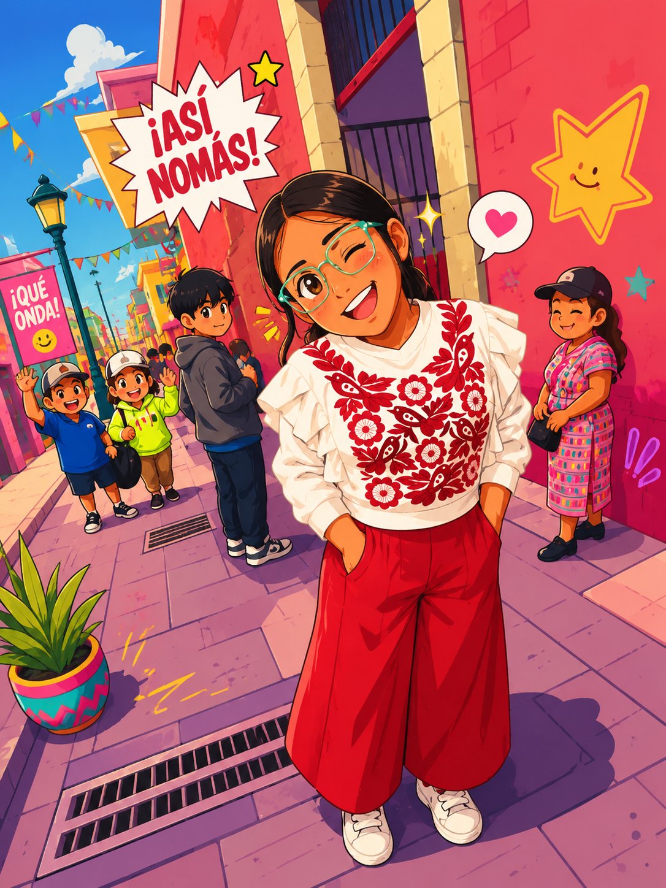
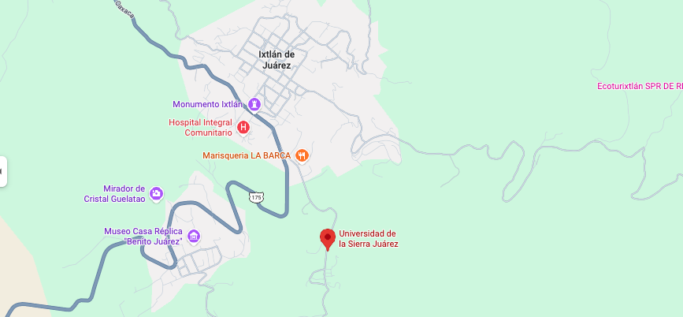

Datos del Proyecto

Alumna: Diana Arlette Martínez Parra
Carrera: Licenciatura en Turismo
Proyecto: Portal Turístico
Tecnologías: HTML5 y CSS
Acerca del Proyecto
Este portal turístico fue diseñado con la finalidad de promover diversos destinos, su gastronomía y sus principales atractivos culturales.
El sitio web integra diferentes elementos de desarrollo web como navegación entre páginas, galerías de imágenes, tablas informativas, formularios y diseño responsivo.
Además, busca fortalecer competencias relacionadas con la organización de proyectos web y el diseño de interfaces para usuarios.
Información de Contacto
Envíanos un Mensaje
Ubicación de la UNSIJ
